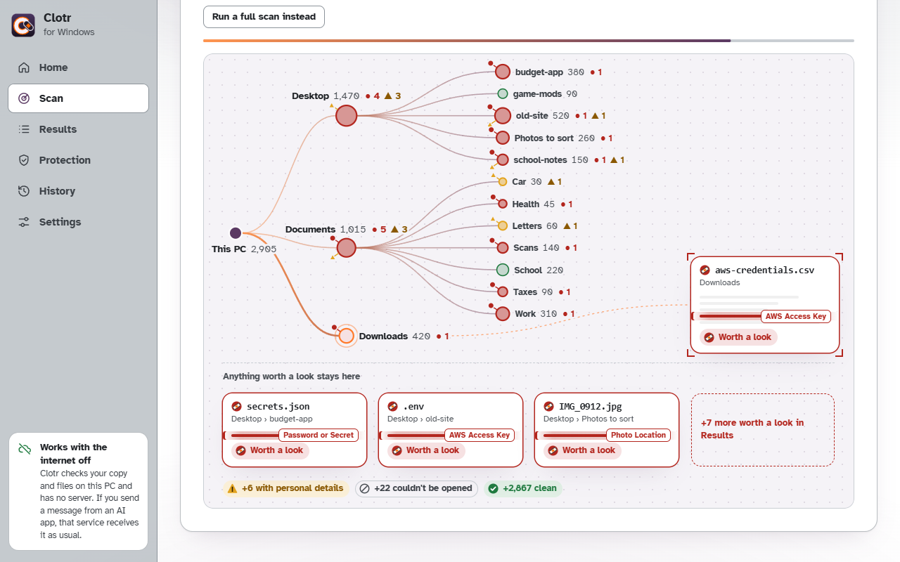
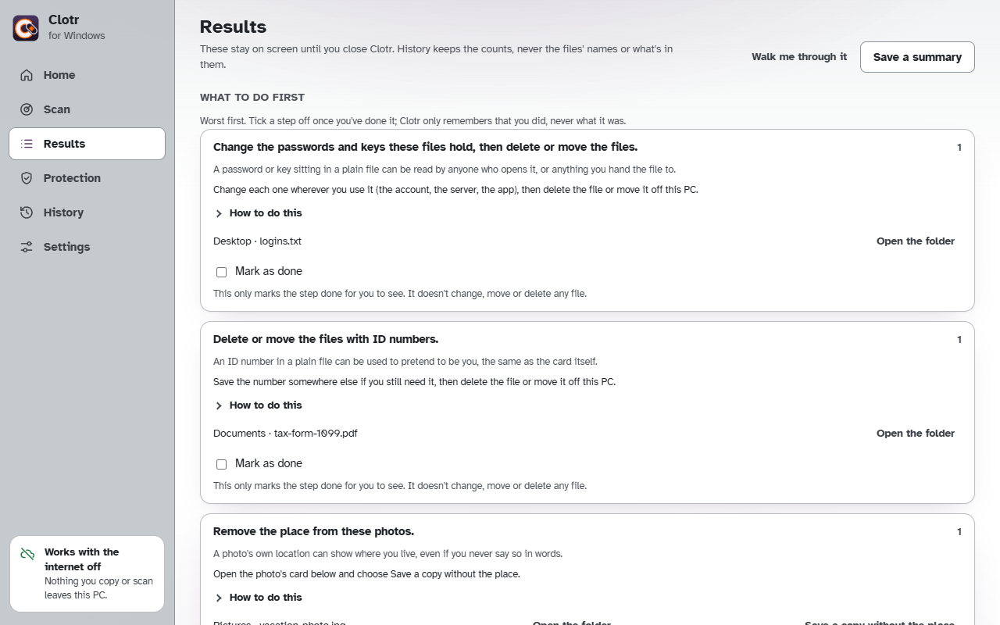
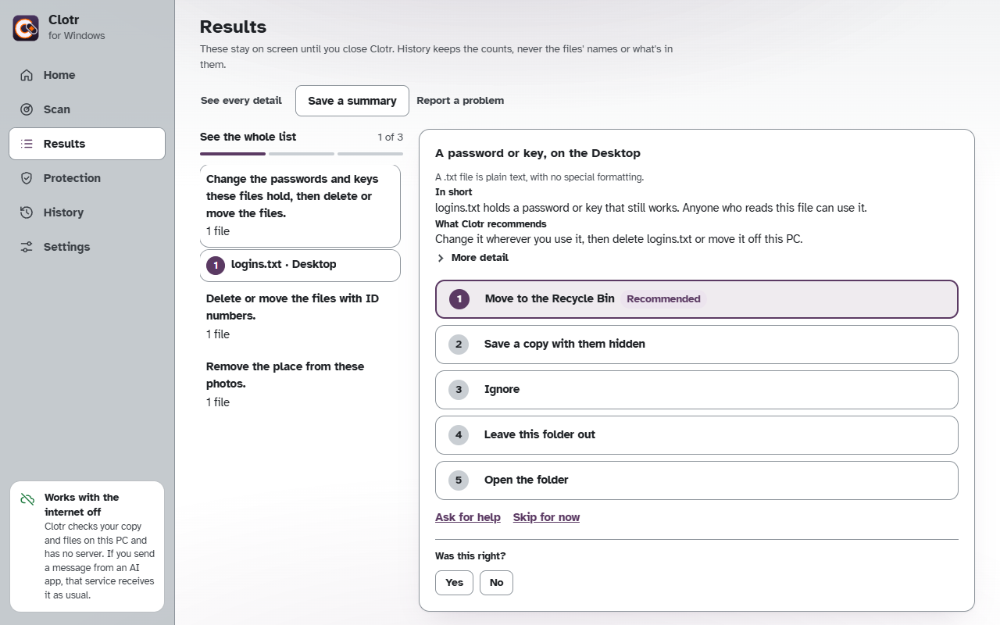
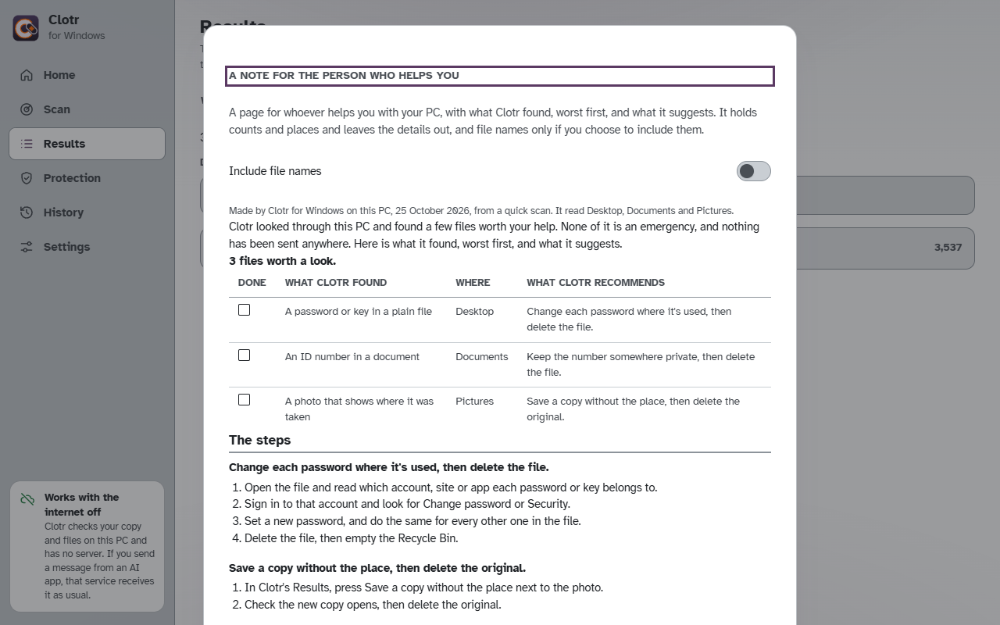

A warning before you paste
Clotr sits in the tray. Copy something while ChatGPT, Claude, Gemini or Copilot's own window is in front, and if it holds a password, an API key, a card number or an ID number, a card shows up beside the app before you paste. You can hide the detail or paste it as it is. Commands get the same check right before they reach the Run box or a terminal, because a pasted command can carry a key too.
Check my files
A Quick scan reads Downloads, Desktop and Documents, a Full scan reads every drive, and Folders I choose reads only what you pick. You watch it work as a web of folders, and anything worth a look stays on screen.
It skips the folders that belong to programs and a password manager's own vault. Leave out of scans, in Settings, takes any other folder off the list.

What to do first
Results don't stop at a list of files. They start with the worst thing and say what to do about it, like changing the passwords a file holds before deleting it, or saving a copy of a photo without its place.
Tick a step off once it's done. Clotr remembers that you did it, and nothing about the file.

One file at a time
If a list of steps feels like a lot, Walk me through it shows one file at a time. It says in a sentence what's wrong with it and what Clotr recommends, and puts the safest choice at the top.
Skip one for now, or go back to the whole list whenever you like.

A note for the person who helps you
If someone else looks after your computer, Clotr can write them a page with what it found and what it suggests, worst first. It holds counts and folders, never the details themselves, and file names only if you switch them on.
Print it, save it as a page, or open it in your email to send.

Also inside
- Look back reads a chat export you've already downloaded and shows what you told an AI before Clotr was there.
- Tourniquet turns on stronger settings for someone you're helping, with your own PIN to change them back.
- Three looks in Settings, called Light, Plum and Ember.
It stays on your PC
Clotr for Windows has no account and no server to talk to. A test reads the program Windows runs and fails the build if a network call ever shows up in it. What it reads and keeps